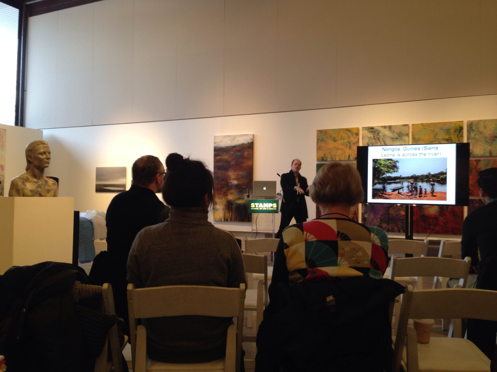
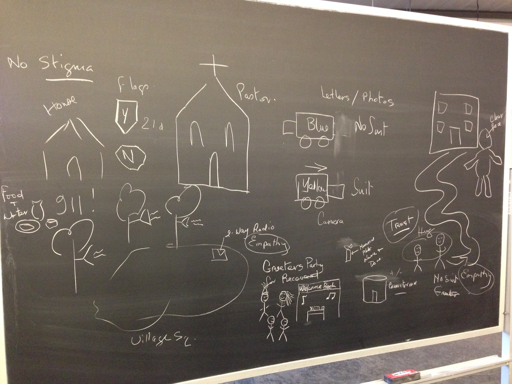
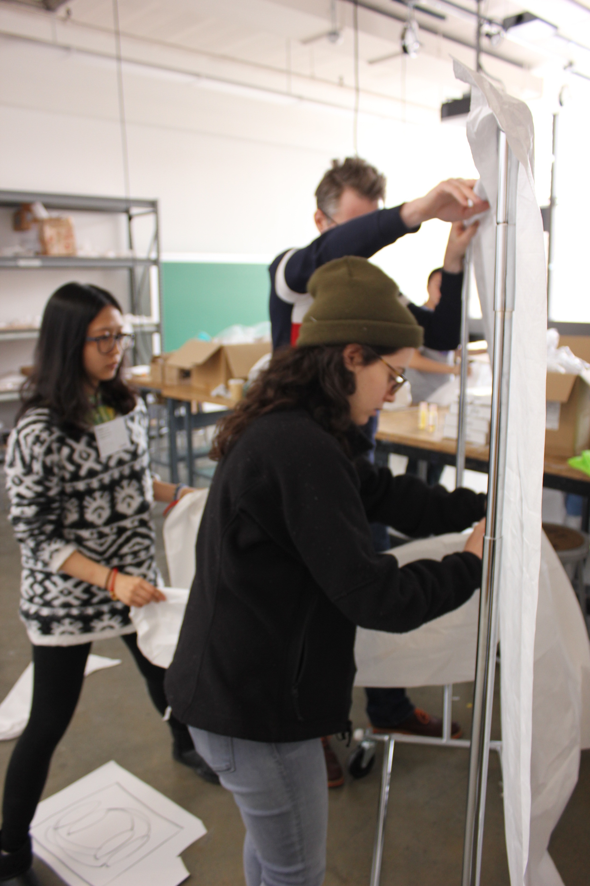
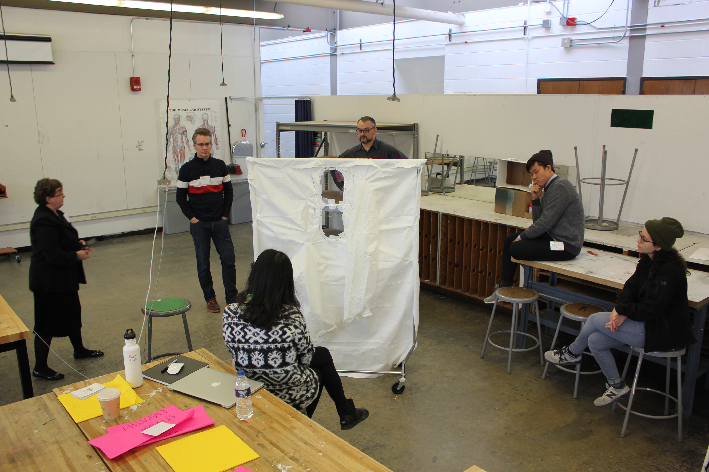
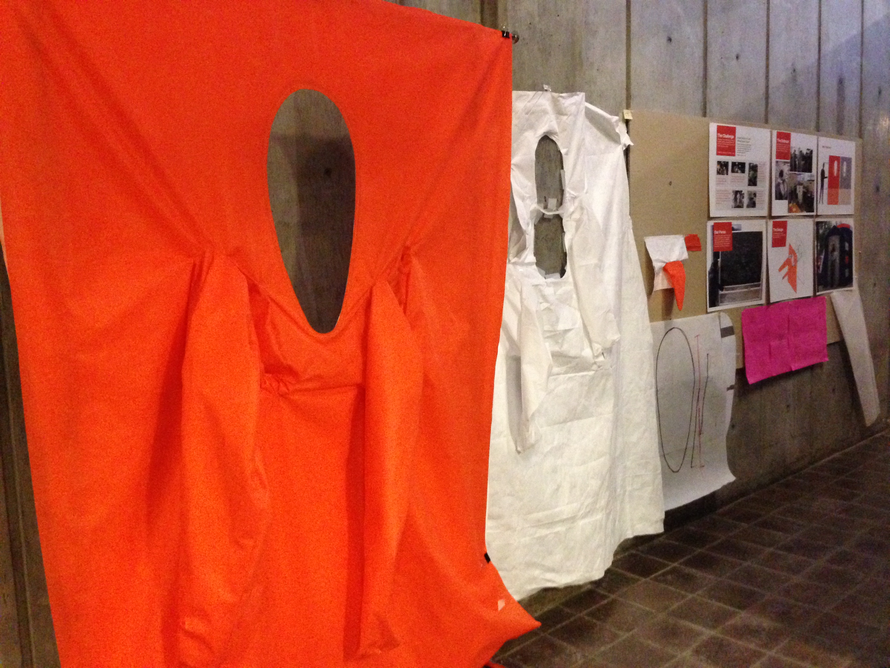
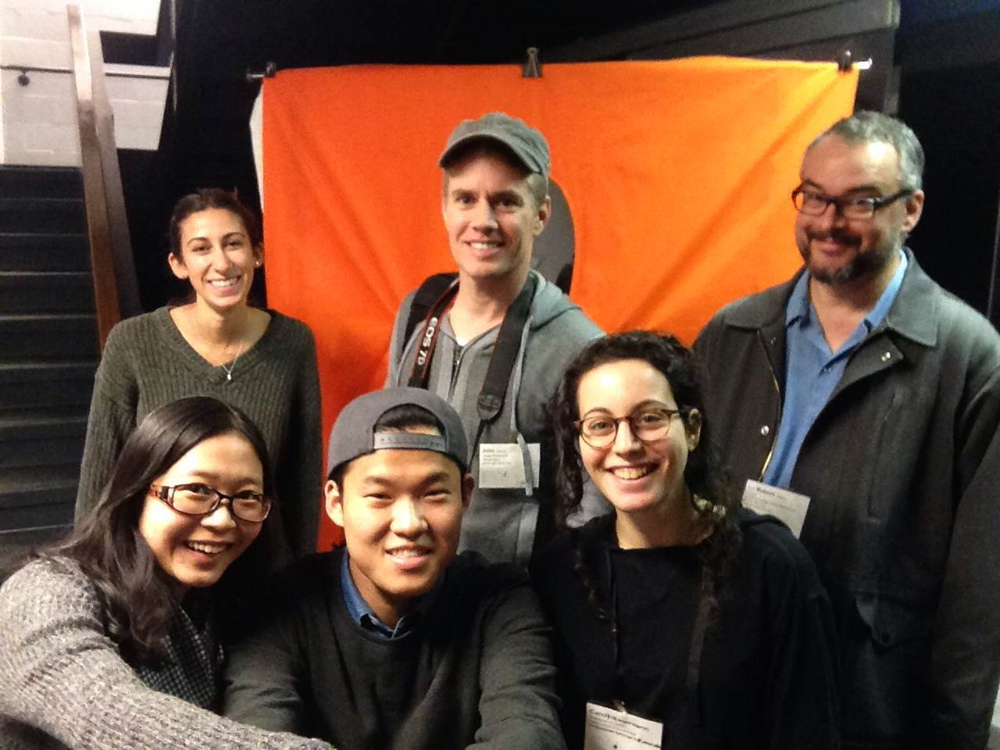

Portofolio of Yichi
Addressing Ebola: A Multidisciplinary Approach Design Charette


Health and Design briefs
Background
In response to the Ebola outbreak in West Africa, the Stamps School host a multi-disciplinary, university-wide Design charette to generate design solutions specific to the Ebola crisis.
From how to safely use and move biohazard equipment, to communication across cultural and linguistic divides, to disposal of hazardous materials, design can make a difference.
In three whole days, undergraduate and graduate students, faculty and professionals from the Stamps School of Art & Design, the School of Public Health, the Medical School, African Studies and the School of Nursing worked in teams to generate creative responses to three critical healthcare issues: 1. design of personal protection equipment, 2. health communication across cultural and linguistic barriers, and 3. transportation of infected and diseased bodies.

Brianstorm board: journey of a recovered patient
Context & Brainstorm
Skills: Research, Interview
I talked to professionals who just came from the West African front line, interviewed law professionals and epidemic professionals in order to get the first-handed information about the situation, the culture, the difficulties and so on. I finally decided to design a solution for communication empathy across cultural and linguistic divides amidst misinformation and panic
Our team (interdisciplinary teams of 6 participants, one professor from UM archetecture, one design professinal UM alumni, one JD, three art undergraduates and me) brainstormed many sections of the journey of a Ebola patient. These sections are all needed to be improved considering the patient's, families' and villagers' feelings and experiences, including stigma signal, ambulance redesign, two way radio, receptions for recovered patients, volunteer and etc.

Quick Prototype
Design Process
Skills: Interpretation, Graphic Design, Prototype, Sewing
Step 1
We found from news and blogs that "People who are isolated and experience little physical contact are known as 'touch hungry'. Ebola patients are isolated, torn away from friends and family and quarantined." After discussion with personal protection and transportation groups, evaluation and negotiation, we decided to design a empathetic hug wall in order to help patients and their families to touch, to communicate and to recover.
Step 2
After collecting west African human beings body metrics, we calculated the numbers we need for the product and drew the sketch on paper. We discussed the shape of the product, the structure of it, safety issue, functional keypoints and other details again and again.
Step 3
After setting up basic hug wall metrics, we did a 30-minutes prototype using arms and legs of 3M suit and other materials common to protective suits. We assessed the quick prototype, changed some figures (like height and shoulder ranges) and decided to make dual layered protective material with four offset sleeves and a bigger viewing window.
Step 4
Final prototype with full size materials. Colors orange and white indicated two side of the hug wall in case of confusion and cause of infection. We sewed eight sleeves first and then sewed the sleeves to corresponding fabric walls. In the end, two fabric walls had been connected by sewing the viewer window.
Step 5
Finished paper work, presenting slides, exibition setting.

Design studio
Future work
* A more comprehensive, relevant and designed understanding of the systemic and elemental problems.
* Open source solutions to functional and cultural obstacles in dealing with the disease.
* Submission of design solutions to Red Cross, OpenIdeo.org, and other organizations.
* Exhibition of teams’ outcomes, as well as website
Some details have been kept based on the disclosure issue.

User testing

Exhibition

Group picture